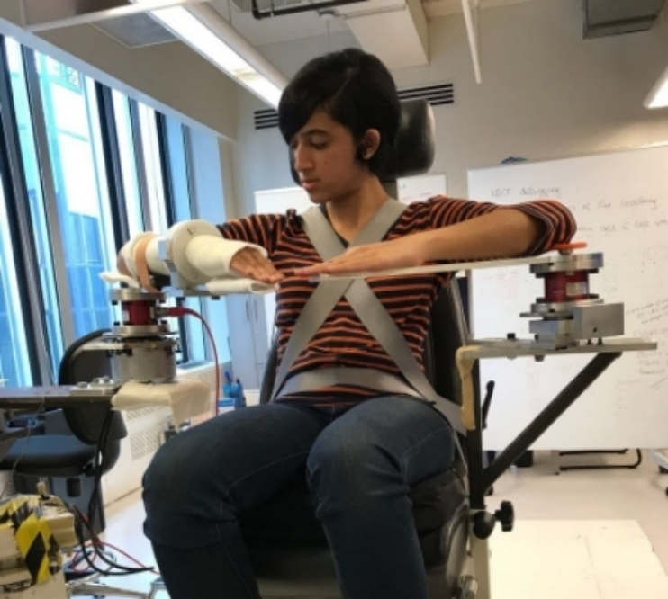

MSR Final Project.
Phase one.
Development of Real-Time Virtual Bimanual Platter Lifting Software Program for Training of Individuals with Stroke
Advisors: Dr. Netta Gurari, Dr. Jules Dewald and Dr. Justin Drogos
Background
There has been extensive research in the field of neurology, with a focus on stroke patients and their rehabilitation. One such study was undertaken by Drs. Netta Gurari, Jules Dewald, and Justin Drogos ["Task Directionality Impacts the Ability of Individuals with Chronic Hemiparetic Stroke to Match Torques Between Arms", International Conference on Rehabilitation Robotics (ICORR), IEEE, 2017]. In a study of ten subjects (6 of them were chronic hemiparetic stroke patients and 4 of them were without neurological impairment). Their primary finding was very interesting: during a torque matching trial, one arm was made to flex about the elbow joint and the other arm was made to match the reference torque. They found that when the patient needed to match the unaffected arm with the affected arm, there was not much of a difference. On the other hand, when the affected arm needed to be matched by the unaffected arm, there was a large torque matching error. The system that is described below is being used by the authors to conduct more research in this area, and to provide training to stroke patients.
Hardware
The existing system setup uses the JR3 force-torque sensor. Strain gauges sense the loads that are imposed on the sensor. The signals are amplified, and combined to become the analog representations of the force loads on the 3 axes. Axes on the sensor are oriented with X and Y axes of the sensor body, and Z axis is perpendicular to the X and Y axes. Data acquisition cards are used to obtain the sensor information and transmit it to the main computer.
Software
The current software system consists of two sections - one section is the MATLAB and Simulink section, which uses all the force-torque sensor data and processes the signals with a control system.
The second section is a Visual Studio component that is being used to represent the force and torque on screen, in the form of circles and lines (as described in the Pilot Testing section).
Participating in Pilot Testing
I was given an opportunity by Dr. Gurari to participate in the pilot testing as a 'subject', which was a really informative experience. I participated in two rounds of pilot testing as the subject, while the PhD students in the Neuroimaging and Motor Control laboratory conducted the trials. Though the final project will include a bimanual task, the pilot testing was done with a single arm set-up. My right arm was set into a fiberglass cast. The first stage of the pilot testing involved measuring the maximum force and torque that my right arm was able to generate. These measurements were recorded using a force sensor. This maximum values for force and torque were set as references, and only 30% of those values was used for further trials to prevent possible fatigue.
The second stage of the pilot testing involved using these values, along with a visual representation of force and torque, to encourage the patient to reproduce a particular force and torque over multiple trials. A horizontal line was used to represent force exerted by the arm along the z-axis, and an expanding/contracting circle was used to represent the increasing/decreasing torque about the right elbow. I had to match a certain value of force along the z-axis, and a torque about the z-axis, to complete the task successfully.
Proposed Work
The MATLAB system software will be upgraded on a new computer, to the latest possible version. After completion of this step, a second JR3 sensor will be incorporated into the system along with a corresponding DAQ card to set up the bimanual training task (as previous setup mentioned earlier used only one JR3 for the right hand only).
An new and interactive visual interface will be designed to run using the output of the MATLAB/Simulink control system. The plan for this interface is to represent a task that is useful and relevant in a stroke patient's day-to-day life. An example of this is a task to train a patient to 'lift' a virtual tray that has cups placed on it. Both of the patient's arms will be strapped to the device, and sensor data will be continuously recorded (for an example, see Figure 1 below).

The tray and cups will be simulated and will use real-time feedback from the control loop to give the patient an accurate feedback while the task is being performed.